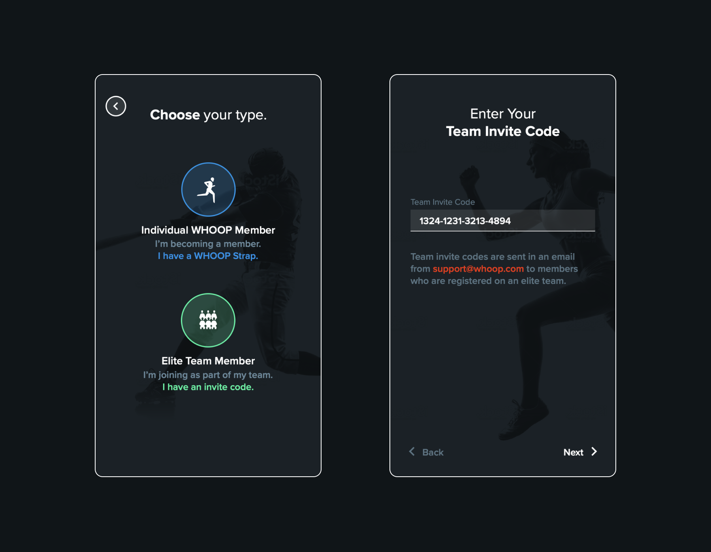
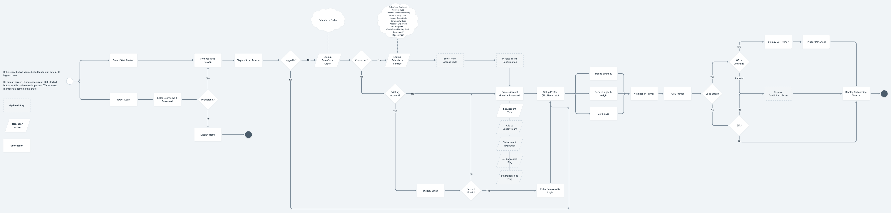

This story is about how reducing cognitive load and choice for users can lead to better outcomes (e.g. more activations).
Building a Frictionless Acquisition to Activation Experience
A bit of background
A key segment of the WHOOP member journey is purchasing a membership (i.e. “joining”) and then setting up the WHOOP Strap (i.e. “activating”).
User flow:
- Visit join.whoop.com
- Purchase a WHOOP Membership
- Receive the WHOOP Strap (…in about 1 week)
- Download the WHOOP App
- Connect the WHOOP Strap
- Setup the user account
- Start the subscription
Key objectives:
- Ensure the member can connect their Strap (via Bluetooth)
- Start the correct subscription for billing purposes
- Collect user data to calibrate algorithms
The WHOOP Strap was effectively a “key” to using the WHOOP app and as a result, starting the subscription billing cycle. Making sure this flow was simple to follow and reliable was critical to the WHOOP member experience as well as the business. This directly impacted WHOOP’s ability to generate revenue. Additionally, the account setup flow included key steps that would calibrate WHOOP algorithms. Getting this right was critical to nailing the member’s first time user experience.
⭐
Edge case hell
The initial happy path user flow for this experience was fairly simple. The member would connect their WHOOP Strap, setup their account, and be off to using the app. Simple. The complexity of this system grew significantly as the business pivoted business models, added new lines of business, and added additional SKUs.
Here are a few examples:
- Members could choose from 3 different membership subscription plan options (1 month, 12 month, or 18 month)
- Members could join for themselves or purchase as a gift
- Members could receive “seed” straps that would contain a variety of pre-paid subscription lengths. This was for influencers for example.
- Members could receive their strap as part of a corporate enterprise deal.
- Members could receive a “used” strap from a friend
- ..the list goes on...
In the end, the system needed to make sure the member creating an account was billed correctly or not at all in the case of an enterprise deal (i.e. memberships were subsidized).
Additionally, the system and resulting member experience needed to adapt to this ever changing landscape. We needed to anticipate requirements and assumptions changing as the WHOOP business matured. Enabling this maturity was critical.
Our first failure: using codes
The initial activation system leveraged activation codes. The member would need to enter an invite code (usually delivered via email) to start the activation flow. The code, if valid, was then used to distinguish between consumers and enterprise members. Consumers are billing via a subscription. Enterprise members are not billed (i.e. their membership are subsidized).
The original activation requiring codes.
While this architecture worked in the early days at a small scale, its created a number of issues as the volume of members scaled.
- Consumers would reach out to support wondering if they needed a code.
- Enterprise customers would forget their code and need to contact someone to get it.
- Enterprise customers would create consumer-based account and get billed.
Support tickets racked up and members would abandon the activation flow. This become costly to support and the activation flow drop-offs impacted the bottom line.
We learned that at scale we could not rely on members to make the “right” choice. Even if the percentage of members running into issues was small (e.g. 5%), the absolute impact become significant.
Additionally, around the same time the above case became a problem, the business was considering offing multiple membership options. A better system and experience was needed.
A flexible system design
Moving forward we need to build a system that was resilient to change and prevented the member from making mistakes.
We landed on a key principle going into the design of the experience; don’t make the member make any decisions and do the work for the member. We envisioned an experience where the member didn’t need to specify their “ member type” nor did they need to enter obscure codes, which are difficult to recall.
We also envisioned a system that would be simple to update over time. We needed to explore questions like “How might we react if the business wanted to offer new products?”, “How might we handle changes to the subscriptions offered?”.
2 key decision arose from our brainstorming:
- Business logic must exist on the server (e.g. subscription options, if a credit card is needed, etc)
- The WHOOP Strap would be used to identify the customer. We were able to build a signature onto the firmware of each WHOOP Strap.
Once the Strap signature was received, things like the order could be looked up, which would give the server all the information needed to determine the end-user experience. In other words, we built the activation flow in a modular way such that the backend could determine which screens were necessary to show. This was all from the member just connecting their strap to the app.
Scroll right to view the activation flow logic.

New user activation flow logic (View diagram in Whimsical).
On a personal note, it was fun getting to collaborate across software and hardware engineering teams to bring an experience to life. Good example of starting with a vision and backing into the technical requirements. I think this is also a good example of going the extra mile to bury as much complexity as possible such that the user experience is a simple as possible. Furthermore, the net result was less drop-off during activation as well as fewer support tickets. Good for revenue and cost savings!
Scroll right to view the activation flow UI. No codes!

The final activation flow UI Design (View in Figma).